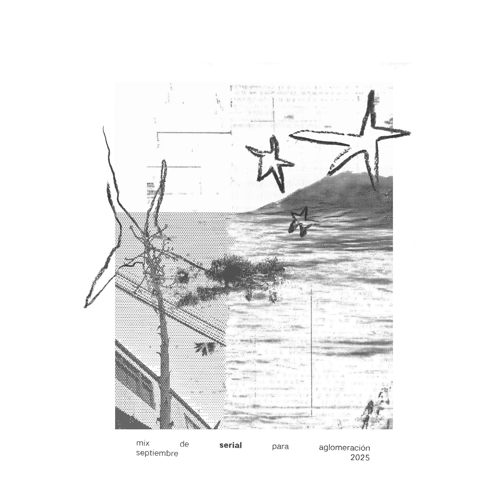

.jpg)
https://aglomeracion.bandcamp.com/album/m-sica-masiva
https://soundcloud.com/aglomeracion/sets/musica-masiva
https://www.ninaprotocol.com/releases/comunicado-musica-masiva
https://soundcloud.com/aglomeracion/mix-de-serial-para-aglomeracion-septiembre-2025
https://www.ninaprotocol.com/releases/por-siempre-vol-2
https://aglomeracion.bandcamp.com/album/por-siempre-vol-2
https://soundcloud.com/aglomeracion/sets/por-siempre-v2
https://soundcloud.com/aglomeracion/aisa-sana-kyy
https://www.ninaprotocol.com/releases/aisa-sana-kyy
 15.27.07.png)
https://soundcloud.com/hkcrlive/dj-daddy-yonqui-invites-qe-02052025-4


https://soundcloud.com/aglomeracion/dj-daddy-yonqui-seis-anos-de-aglomeracion-pt-2-131224
Felipe Ramos es estudioso e intérprete de la música tradicional campesina de la zona centro-sur de Chile. Desde el año 2018 estudia junto a la investigadora de la cultura tradicional campesina Patricia Chavarria, y además toma contacto con algunas cantoras de la Región de Nuble de quienes aprende e interpreta su repertorio. Actualmente forma parte del equipo de trabajo del Archivo de Cultura Tradicional. “¿Estas canciones no las aprendiste por tu trabajo de recopilación? Algunas sí, pero no es que sean todas canciones tradicionales. Algunas las cantan las cantoras, pero no son tradicionales chilenas. Aunque me acerqué a la música mexicana por haberme acercado al mundo de la gente del campo. Ahí empecé a gustar de la música mexicana, aunque fue como redimir algo, porque cuando yo era chico —y todavía ahora—, mi abuela solo escuchaba música mexicana. La Radio Ñuble en Chillán tiene un programa que está al aire desde los años 60, que se llama El Mensajero Musical. Se transmite de lunes a sábado, desde las 7 a las 9. Es un programa icónico de la gente del campo de Ñuble. Antiguamente se usaba para enviarse mensajes, y ese programa lo escuchaba mi abuela… Es pura música mexicana que lleva sonando más de 50 años, y yo todavía lo escucho. Ojalá nunca se acabe El Mensajero Musical.” Música acústica, una colección de canciones plañideras, una carta dirigida a las citas de Grindr encontradas y perdidas.
https://aglomeracion.bandcamp.com/album/canciones-mexicanas

 07.10.26.png)


Un espectro recorre este fonograma digital y magnético: el espectro de Chile. Que tal fantasma y fantasía sea puro desfallecimiento, no implica que Aglomeración no se sienta inmensamente complacido de ofrecerlo a su público auditor. Tampoco es la tarea de este texto promocional tirar factos o plantear una actitud chill de cojones frente a la forma y contenido del fonograma: Aglomeración descarta completamente una apelación juvenil a su público. sin aspavientos y Trío Hogar decidieron realizar una publicación conjunta; luego de despejar la posibilidad de trabajar juntos —metodologías incompatibles— zanjaron que cada lado de 30 minutos de la cinta magnética fuera ocupado por su trabajo. El único punto en común es que la tarea técnico-fonográfica estaría a cargo de Fedor Cambiazo. Nada hacía presagiar que, a pesar de la labor separada, lo obrado se acerca a “lo mismo”. Ese “lo mismo” es el espectro de Chile (“Chile” no puede ser otra cosa que un espectro), la “escenografía musical vigente” (te lo dice Trío Hogar en su publicación en vivo 2024), “el sentido nacionalista en la música chilena” delirado por Roberto Escobar en 1961, los “fragmentos reverberados y no reverberados” utilizados para audio (partitura de B. Vásquez, 2024, realizada por sin aspavientos simultáneamente con la ejecución de sin título #11, 2013-19, de N. Carrasco), los perros que ladran ocasionalmente, las veredas que son regadas de tarde en tarde, las cuerdas tañidas con violencia, lo que el pueblo sabe sobre los ruidos en chileno.
https://aglomeracion.bandcamp.com/album/sin-aspavientos-tr-o-hogar